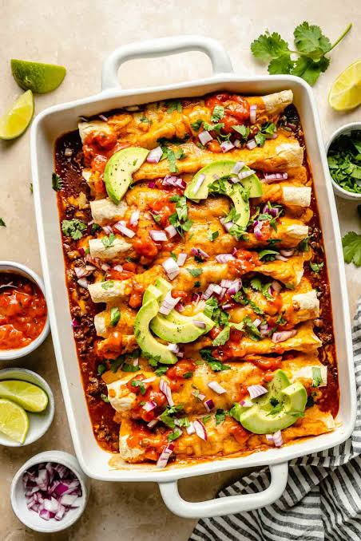

Enchiladas
Home

Description
Beef enchiladas are one of the greatest dishes to ever grace the human palate. A bottomless sea of flavor, texture, nostalgia, and customizability.
To taste one is to taste a hundred thousand years of civilizations, and a collective 6 billion Terawatt-hours of energy consumed by the human mind.
From personal experience, I highly recommend prepping a vast quantity of these ahead of time, then adding fresh toppings just before serving.
Ingredients
- A large chunk of a cheap cut of beef (e.g. rump roast, chuck), about 1.5 - 2 lb
- 8 medium or large flour tortillas
- One large onion
- 4 cloves of garlic
- Tomato Paste
- The following spices: salt, pepper, cumin, paprika, cayenne
- [Optional but recommended] Fresh cilantro, lime juice, and additional raw onion
Steps
- Sear the beef: Coat the beef chunks with spices and sear on all sides over medium-high heat until a rich crust forms.
- Cook until tender: Add onion chunks, garlic, spices, broth, and tomato sauce. Pressure cook for 1.5 hours, or slow cook for at least 4 hours until the beef is fork-tender.
- Shred and soak: Shred the cooked beef and let it soak in the flavorful cooking liquid to absorb the juices.
- Assemble the enchiladas: Warm the tortillas over low heat. Fill each tortilla with a generous portion of the shredded beef and cheese, then roll them up tightly.
- Bake: Line a baking tray with the rolled enchiladas, cover them with the reduced cooking liquid, and top with more cheese. Bake at 350°F for 25–30 minutes, or until the cheese is melted and bubbling.
- Garnish and serve: Serve hot with fresh cilantro, lime wedges, raw diced onion, and an extra drizzle of the reduced cooking liquid. (Makes 4–6 servings).